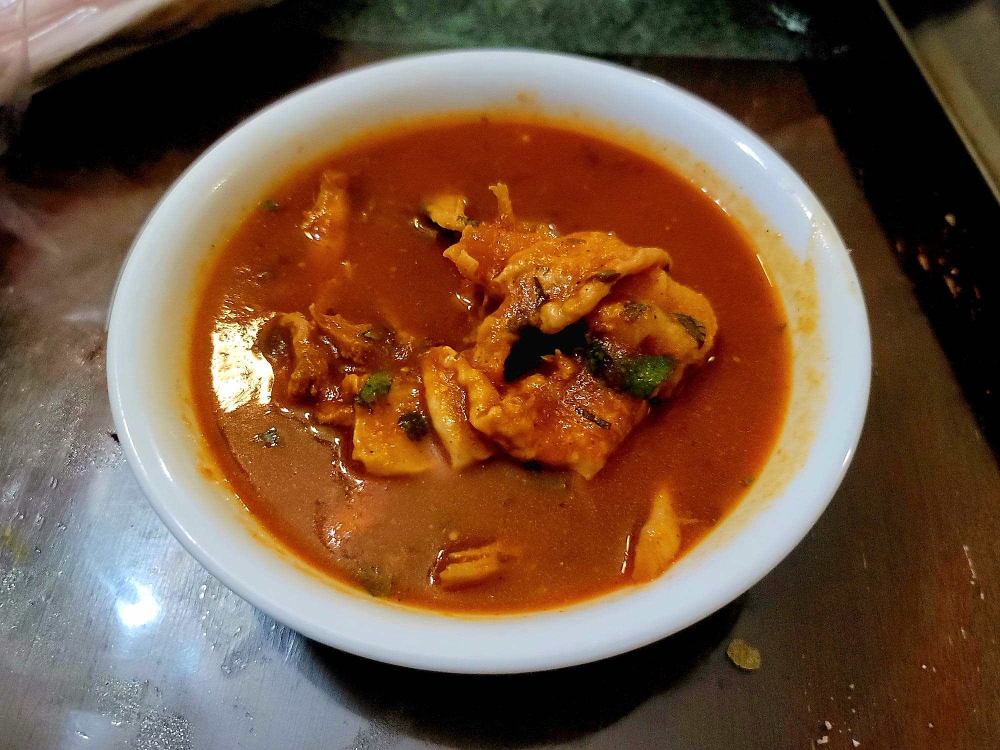

Kak'ik

Ingredients:
- 4 Turkey legs
- 4-8 cups Turkey stock, or as needed
- 1/2 cup Culanto, or substitute Cilantro, + more to garnish
- Salt, to taste
- 6 Roma tomatoes, halved
- 4 Tomatillos, husked and halved
- 1 Onion, halved
- 2 heads Garlic, separated but not peeled
- Optional: 2 Red peppers or Red bell peppers, halved, stemmed, and deseeded
- 2 Dried guajillo chilies OR 1 Dried guajillo chili + 1 Dried pasilla chili, stemmed and deseeded
- 1 tsp Cobanero chili powder or Chipotle chili powder, or to taste
- 1/2 tsp Cinnamon
- 1/4 tsp Allspice
- Optional: 1-2 tbsp Masa, or to preference
- 1/4 cup Mint, chopped
Instructions:
- Place the turkey legs into a pot and cover about an inch with the stock. Add in the culantro and salt to taste. Bring to a boil and reduce to a simmer. Let simmer until the turkey is tender, at least 45 minutes up to 3 hours depending on the age of the turkey.
- Preheat a broiler. Place the tomatoes, tomatillos, onion, unpeeled garlic, and red pepper onto a baking sheet, cut side up. Let broil for about 15 minutes or until partially blackened. Be careful not to burn. Then remove from the broiler and let cool until handleable.
- While it broils, add the dried chilies to a dry pan over medium heat. Toast until fragrant. Then transfer the chilies to a bowl and pour over with boiling water. Let soak until rehydrated.
- Once cool enough to handle, peel the garlic and place all the vegetables and the peppers into a food processor along with the chili powder, cinnamon, and allspice. Process until very smooth, adding some of the turkey broth to help blend if needed.
- Remove the turkey from the broth and remove the bone and shred. Then place back into the broth. Optionally, remove the whole culantro from the broth.
- Stir in the blended vegetables and let simmer for about 15 more minutes. Taste and add salt as needed. Then stir in masa to thicken to preference, if desired. Finally, remove from the heat and stir in chopped culantro and mint to garnish. Serve immediately.